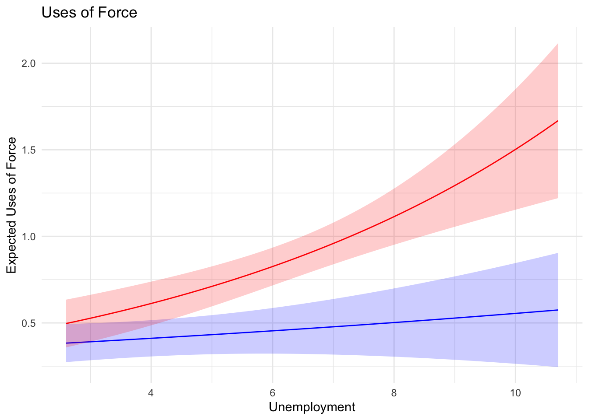
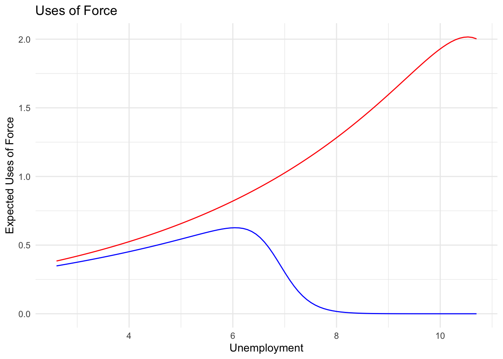

\(\lambda\) is the expected number of events per period, \(d\).
event probability per period is \(\lambda d\)
events arrive independently of one another in each period.
constant rate of arrival and event independence imply mean-variance equality.
Extra-poisson processes
The occurrence of one event increases/decreases the chances of a second event.
This might occur due to positive/negative contagion.
The result is observations of \(y\) with larger/smaller observed numbers of events.
This increases/decreases the mean relative to the variance; this is over/under dispersion.
The negative binomial measures the ``extra’’ variance, \(\alpha\). If \(\alpha=0\), the variance is \(exp(0)*\lambda=\lambda\), so the variance is Poisson.
Trials
If we have events coded as a binary variable indicating successes and failures, and we know the number of trials, the data are binomial, and probably should {not} be aggregated and treated as Poisson.
Relatedly, we often assume the number of trials, \(M\) is infinite - i.e., an infinite number of events {could} occur in each period. But sometimes, we know \(M\), and that it is {not} infinite, and that no number of events greater than \(M\) could take place in period \(d\). Think of this known number of trials as {exposure} or the maximum number of times an event could possibly occur in a period.
If exposure, is neither infinite nor constant, it’s important to control for it in the model:
\[E[Y] = exp(x\beta + \ln(exposure))\]
where the coefficient on exposure is fixed at 1. Note this reduces to \(\lambda*M\) or the rate of event arrival given the number of trials. The rate is now proportional to trials or exposure.\ ~\
For instance, suppose we model the number of deaths by terror attack per attack. Exposure for attacks in crowded markets would be different from exposure for attacks in relatively deserted roadsides. Alternatively, exposure for number of flu cases per household would be limited by the size of the household.
Incidence Rate Ratios
Note that the estimate \(\hat{\lambda}\) is a rate. That rate measured at two values of a variable, say \(X=0, X=1\) can be written as a ratio (the Incidence Rate Ratio, IRR):
which we can interpret as the change in the incidence rate, \(\lambda\) given a change in \(X\) from zero to one. This is an easy interpretation, useful to report for count models.
Quantities of Interest
the rate of event occurrence, \(\lambda = exp(x\beta)\). -\(Pr(Y=y) = \frac{exp(-\lambda) * \lambda^y_i}{y_i !}\)
confidence bounds given by \(\lambda \pm 1.96*s.e.\) or by something similar for the Poisson probability.
Unobserved Heterogeneity
A problem in any model is unobserved heterogeneity. In nonlinear models, the problem is acute because misspecification may have to do with
missing variables.
outliers on \(y\).
functional form of \(x\) or \(\beta\).
assumed homogeneity in observations on \(y\).
assumed homogeneity in the rate of change across \(y\).
assumed homogeneity in DGP with respect to \(y\).
Event count and hazard models provide a variety of mechanisms for thinking about these problems, for accounting for them mechanically, and for modeling heterogeneity.
Heterogeneity in Event Data
Let’s talk about things we might be concerned with in events data:
frequency distribution of events.
similarity of events within period.
similarity of periods, not just in length but in exposure for events.
differences in reasons for non occurrence.
correlation of events within period.
Heterogeneity in Failure/Survival Time Data
And compare those things to what we might be concerned about in time to failure (hazard) data:
distribution of time periods between events/failures - label these ``failure times.’’
similarity of failure times.
similarity of failure events.
censored cases; why some cases never have failure events.
correlation of failure probabilities within period.
Heterogeneity
Notice in both lists that the problems all lie in heterogeneity either in events, periods between events, or latent probabilities of events.
What do we mean exactly by heterogeneity?
events/periods are qualitatively different such that we cannot expect the same process to produce them all.
put differently, events are drawn from different distributions of events; different means, variances, or both.
if the means are different, \(\beta\) will be attenuated.
if the variances are different, the model suffers something like heteroskedasticity.
even if events are drawn from the same distribution, they may come from different parts of the distribution. % - if \(x\) variables are not correlated (sufficient to explain) the whole distribution, some events are unmodeled and skew conditional expected mean and variance.
Events/Periods from Different Distributions
World War II, Vietnam, Franco-Prussian, Football - vary on magnitude, participants, rules, weaponry.
Interstate war, Civil war, Extra-systemic war - different units.
Patients visiting general practitioners in US - varies with insurance and wages.
Taylor Swift concerts attended - varies in times on tour, proximity to event
Visits to Disney World per year (time between visits) - proximity and number of children as exposure.
Different Parts of Distribution
Effect of divided govt - different pre-cold war, cold war.
Power status changes as states become major or super powers, others decline
Different DGPs indicate different mechanisms
Different distributions implies different data generating processes and that we need to think about models with two parts, potentially two equations.
This sort of thinking characterizes event count, hazard, censored, selection, and seemingly unrelated regression models.
The focus here is on count models where the observed count is generated by multiple processes.
Motivating models
The formal motivations of these models is straightforward enough. Motivating a mechanism, however, is more complicated and more important. The common empirical indicator of multiple DGPs is excess zeros. But excess zeros does not guarantee two processes are at work, nor that we know what they are even if they do.
Short version - use these if your theory indicates parallel processes at work, not merely because the data are dominated by zeros.
Mechanics
Suppose that we have count data that contains a large number of zeros.
The zeros reduce both the mean and the variance.
The variance is likely to be larger than the mean due to any positive counts.
An overabundance of zeros can produce overdispersion; a large conditional variance relative to the mean.
This sounds like garden-variety unobserved heterogeneity; we haven’t sufficiently modeled the zeros in the data. While this might be true, another possibility exists.
Split Populations
Suppose that two different processes actually generate the data we observe in our event count variable. One process determines whether or not we will ever have any chance of observing positive (nonzero) numbers of events; that is, it determines \(Pr(y_i=0)\).
The second process determines how many events we will observe, given that we have any probability of observing nonzero events, \(Pr(y_i=j)\).
The generality of this allows us to distinguish two basic models. If our story tells us to expect,
\[
Pr(y_i>j, \forall j>0)|Pr(y_i>0)
\]
then we have something like the hurdle poisson model. On the other hand, if our story says
\[
Pr(y_i>j, \forall j \geq 0|Pr(y_i>0)
\]
then we have something like the zero inflated model. I’m going to focus on the zero inflated models.
Let’s consider two stories to illustrate (the first drawn from Green via Zorn (1998, 372), the other from the IR literature).
Suppose we want to know how many times individuals have fished in a particular lake. Some individuals will answer that they have never fished in that lake because they’ve simply never gone there, preferring other fishing holes. These individuals are at risk for having fished there, but haven’t for exogenous reasons. Other individuals, however, will respond that they’ve never fished in the lake and probably never will because they don’t fish, don’t own fishing gear, and hate the water. These folks are never at risk of fishing there any positive number of times - they will always receive zeros in the data.
The problem is that the data have plenty of zeros (“No, I’ve never fished there”), but the zeros can mean two substantively different things - “I could have, but didn’t” for some reason (I live too far away, etc.) and “I hate fish.” Some process determines whether or not an individual crosses the threshold from “always-zero” into the “possibly, but not inevitably, positive” zone. A second process determines how often an individual actually does fish there, given that they fish at all.
Here’s a second example. The international conflict literature talks at some length about the “opportunity and willingness” to engage in military conflict and claims these are “jointly necessary conditions” for interstate conflict. Typically, IR scholars are adept at identifying variables that represent different facets of “willingness” to fight, but deal less well with whether or not states have the opportunity to fight. Indeed, there’s an empirical literature on the “opportunity” to fight addressing the issue of “political relevance.”
But think about the possibility that two processes generate the data on whether or not or how often states fight one another. One process makes pairs of states either eligible to fight or not; the other process determines how often those states fight, given that they are eligible to do so. Put another way, one process determines whether a dyad has the opportunity to fight, and another process determines the extent to which they are willing to fight and how many disputes the dyad actually has.
Dual Regimes
Two regimes generate the observed data. Treating those two data generating processes masks substantial heterogeneity, and so misspecifies the model in structural ways. If we fail to acknowledge the two regimes, we treat them as if they’re the same. So in the case of excess zeros, we treat those zeros as if they’re all generated by the same process.
The underlying problem in either of these examples and in these dual regime models more generally is that even though we might theorize on the two processes, ultimately we cannot look at the zeros in the data and say, “these zeros occur because these states simply lack the opportunity to fight, while those zeros occur because even though states had the opportunity to fight, they chose not to.”’’” In other words, we cannot observe the exact split in the zeros, between the two regimes or processes.
In the count context, we turn to zero inflated count models - these are one type of split population model.
Zero Inflated Event Counts
Suppose we have an event count variable \(Y\), but we believe the variable might be produced by two different processes. Then,
\[
y_{i}=p_{i}^{*}y_{i}^{*} \nonumber
\]
In this formulation, \(p_{i}\) is the probability of any individual makes the transition from the state where he can only experience a zero, to the state where he is eligible to experience a positive number of events; \(p_{i}^{*}\) is a dichotmous variable indicating whether or not the individual makes the transition - note that this is very much the intuition underlying binary variable models like probit and logit. \(y_{i}^{*}\) is the Poisson distributed event count {for those individuals who make the transition}. Thus, the mean of \(y_{i}^{*}\), \(\lambda_{i}\) is conditional on \(p_{i}\).\
Less formally, consider \(p_{i}^{*}\) and \(Y_{i}^{*}\) as two dependent variables about which we can hypothesize; the first is dichotomous and we can model it using probit or logit; the second is Poisson and we can use Poisson regression (or even negative binomial regression if there are other sources of overdispersion).
Suppose we believe that a set of variables, \(z\) produce \(p_{i}^{*}\); let’s label the probability of being a zero (not making the transition) as \(\psi\) and we can treat this either as probit,
This is the Zero Inflated Poisson (ZIP) model. The conditional mean of \(Y\), \(\lambda\), is adjusted for the zeros in the model - the conditional mean is adjusted by a factor of \(\psi\), the probability of {not} experiencing the transition. We can also extend this logic to the negative binomial (ZINB) model, but I’m going to stick with the Poisson for examples below. Long provides a good treatment of the both of these models and their interpretations.
Examples
In a widely cited paper, Fordham (1998) argues that US uses of force abroad for political purposes will vary with the political economy concerns of US presidents; those PE concerns vary with party. Republican presidents can better address inflation (a concern of their core constituents) via macroeconomic policy than they can unemployment. Democrats can better deal with unemployment while satisfying their core constituents’ preferences. This means US presidents of different parties should react to economic conditions differently. Democratic presidents should use force less when they face unemployment, more when they face inflation. Republican presidents should use force less when they face inflation, more when they face unemployment.
The \(y\) variable in this paper is US uses of force per quarter; let’s take a look at the data.
code
library(haven)# read in the datafordham <-read_dta("/Users/dave/Documents/teaching/606J-mle/2022/slides/L11_count2/code/fordham98jcr.dta")force <- fordham %>%group_by(force) %>%summarise(n=n())# highcharter aggregated frequency bars of force variable highchart() %>%hc_chart(type ="column") %>%hc_title(text ="Uses of Force") %>%hc_xAxis(categories = force$force) %>%hc_yAxis(title =list(text ="Frequency")) %>%hc_add_series(name ="Uses of Force", data = force$n) %>%hc_tooltip(valueDecimals =0) %>%hc_plotOptions(column =list(colorByPoint =TRUE)) %>%hc_colors(c("#005A43"))
Here’s a Poisson model similar to what Fordham reports (left column) and a negative binomial model (right column) for comparison.
In this case, 0.097 - very small in magnitude, and not statistically different from zero, indicating the Poisson is the correct model. Despite the abundance of zeros, the count variable does not have much in the way of outliers at its upper bound, constraining the variance.
Here are predictions from the Poisson regression similar to what he reports:
code
#predict uses of force over unemp from min to max; all other variables at medianspredictiondatadem <-data.frame(unemp=seq(min(fordham$unemp), max(fordham$unemp), length.out=100), cpi=median(fordham$cpi), war=0, wecycle=0, pecycle=0, demunemp=seq(min(fordham$unemp), max(fordham$unemp), length.out=100), demcpi=median(fordham$demcpi))predictiondatarep <-data.frame(unemp=seq(min(fordham$unemp), max(fordham$unemp), length.out=100), cpi=median(fordham$cpi), war=0, wecycle=0, pecycle=0, demunemp=0, demcpi=0)preds <-data.frame(predict(mod1, newdata=predictiondatadem, type="response", se=TRUE))preds <-data.frame(preds, predict(mod1, newdata=predictiondatarep, type="response", se=TRUE), unemp=predictiondatadem$unemp)preds <- preds %>%rename(dem=fit, demse=se.fit, rep=fit.1, repse=se.fit.1)ggplot(preds, aes(x=unemp, y=dem, ymin=dem-demse, ymax=dem+demse)) +geom_line(color="blue") +geom_ribbon(aes(ymin=dem-demse, ymax=dem+demse), fill="blue", alpha=.2) +geom_line(aes(x=unemp, y=rep), color="red") +geom_ribbon(aes(ymin=rep-repse, ymax=rep+repse), fill="red", alpha=.2) +labs(title="Uses of Force", x="Unemployment", y="Expected Uses of Force") +theme_minimal() +theme(legend.position="none")

Consistent with Fordham’s expectations, Democratic presidents are less reactive to unemployment in terms of using force abroad than are Republicans. As unemployment mounts, Republican presidents are more likely to use force abroad, while Democrats may be more likely to use macroeconomic policy because they can do so while satisfying their core constituents.
Opportunities to use force abroad
One of the enduring problems in studies examining this very question is whether the opportunity to use force is always present or if it varies in some way. Some formal work argues that, because potential US targets (scapegoats) can observe when the US president is in need of a rally of some sort, those targets can behave uncontroversially in order to avoid becoming targets. As a result, just when US presidents most need a target, they are least likely to find one - thus, opportunities are not constant and they are not randomly determined.
In other words, opportunities to use force may be endogenous to the same variables that determine the likelihood of using force.
Taking a look at Fordham’s dependent variable, we can find some evidence that a second process (determining opportunities) might be at work:
code
# kableextra table of force frequency and percentages rounded to 2 decimal placeslibrary(kableExtra)fordham %>%group_by(force) %>%summarise(n=n(), percent=round(n()/nrow(fordham)*100, 2)) %>%kable("html") %>%kable_styling(bootstrap_options =c("striped", "hover", "condensed", "responsive"), full_width = F)
force
n
percent
0
95
51.63
1
57
30.98
2
21
11.41
3
9
4.89
4
1
0.54
5
1
0.54
More than 50% of the observations are zeros - is this because US leaders choose not to use force more than half the time, or because they cannot use force? This is unobserved, but regardless, the overabundance of zeros is likely to pull the mean down relative to the variance and thus produce over-dispersion.
Suppose we model these two processes even though they are unobserved. According to existing work, some of the same variables that make presidents use force abroad (the economy, etc.) will also influence the availability of opportunities to use force, and thus will influence the likelihood of a zero. Consider the following model:
code
# zero inflated poisson model using pscllibrary(pscl)mod2 <-zeroinfl(force ~ unemp + cpi + war + wecycle + pecycle + demunemp + demcpi | unemp + war + wecycle + pecycle + demunemp +approval +vietsynd , data=fordham, dist="poisson", link="logit")library(modelsummary)modelsummary(mod2)
(1)
count_(Intercept)
-1.263
(0.466)
count_unemp
0.223
(0.066)
count_cpi
-0.078
(0.040)
count_war
-0.614
(0.285)
count_wecycle
0.881
(0.306)
count_pecycle
0.001
(0.244)
count_demunemp
-0.037
(0.054)
count_demcpi
0.127
(0.056)
zero_(Intercept)
-15.845
(12.166)
zero_unemp
2.101
(1.357)
zero_war
-7.129
(706.556)
zero_wecycle
-3.442
(242.892)
zero_pecycle
-3.636
(3.309)
zero_demunemp
1.431
(0.821)
zero_approval
-0.153
(0.083)
zero_vietsynd
2.268
(1.458)
Num.Obs.
184
R2
0.133
R2 Adj.
0.093
AIC
417.4
BIC
468.8
RMSE
0.86
Interpretation, as usual, is relatively straightforward in terms of direction and significance, but there is one important twist. Recall that \(\psi\) is the probability of not making the transition. In other words, \(\psi\) is the probability of observing a zero - this is exactly backwards from how we’d normally interpret logit or probit coefficients (note the default in pscl is the logit link). So, as unemployment increases, so does the likelihood of observing a zero for Republican presidents - for Democrats, the effect is even greater. This may be evidence that foreign states seek to avoid trouble with the US when unemployment goes up - opportunities to use force become more scarce.
As usual, we want to interpret the magnitudes of these effects and, as is the case in any event count, we might want to predict \(E[Y]\) or \(P(Y=y_{i})\). You’ll be happy to know that the computing the expected value is very simple:
and computing \(P(Y=y_{i})\) is also straightforward:
\[
P(y_{i}=0|x_{i})=\psi_{i}+(1-\psi_{i})e^{-\lambda_{i}} \nonumber \\ \nonumber \\
P(Y=y_{i}|x_{i})=(1-\psi_{i})\frac{e^{-\lambda_{i}}\lambda_{i}^{y_{i}}}{y_{i}!}~
\mbox{for}~ y_{i}>0 \nonumber
\] Let’s generate predictions for the expected uses of force using the zero inflated model.
code
# predict expected uses of force using predictiondatadem and predictiondatareppredictiondatadem <-data.frame(predictiondatadem, approval=55, vietsynd=0)predictiondatarep <-data.frame(predictiondatarep, approval=55, vietsynd=0)preds2 <-data.frame(demforce =predict(mod2, newdata=predictiondatadem, type="response"))preds2 <-data.frame(preds2, repforce=predict(mod2, newdata=predictiondatarep, type="response"), unemp=predictiondatadem$unemp)ggplot(preds2, aes(x=unemp, y=demforce)) +geom_line(color="blue") +geom_line(aes(x=unemp, y=repforce), color="red") +labs(title="Uses of Force", x="Unemployment", y="Expected Uses of Force") +theme_minimal() +theme(legend.position="none")

As unemployment increases, uses of force diverge between the two parties even more than in Fordham’s original model. Foreign states may avoid trouble with the US when unemployment goes up, making opportunities to use force more scarce, though Republican presidents, unable to use macroeconomic policy to address unemployment, seem to seek out opportunities to use force. Democrats, both because there are fewer opportunities and fewer incentives to use force under growing unemployment, see uses of force decline.
Comment
The zero altered models are mainly estimatable in R using either pscl or glmmTMB. The former is written by political scientists including Simon Jackman. The latter is a package aimed at multi-level estimation (e.g. random effects). Results from the two do not always correspond. Moreover, models that converge easily in Stata do not always converge in R - I’m making no judgment regarding what’s right here.